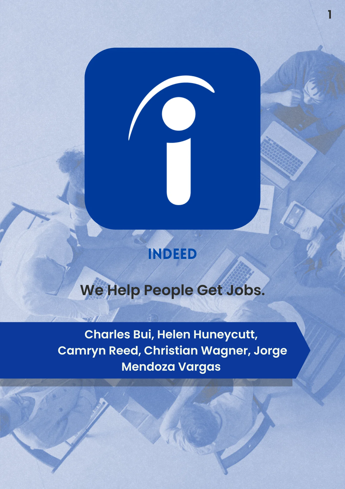
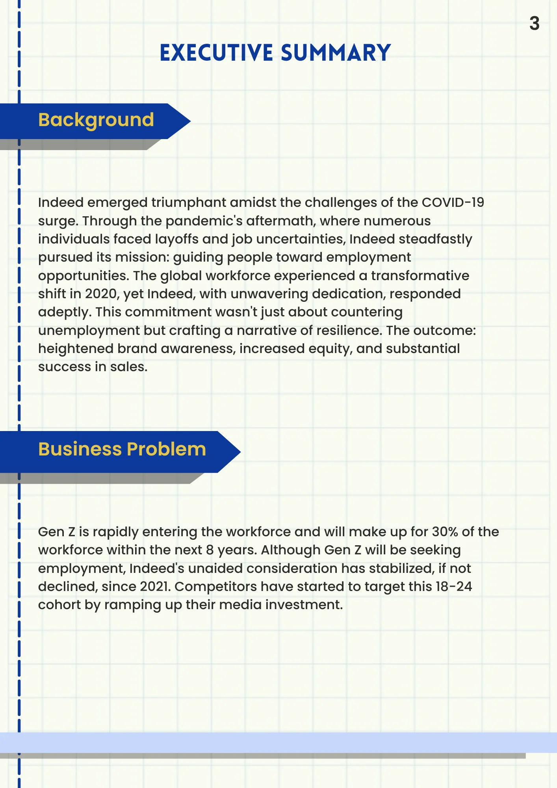
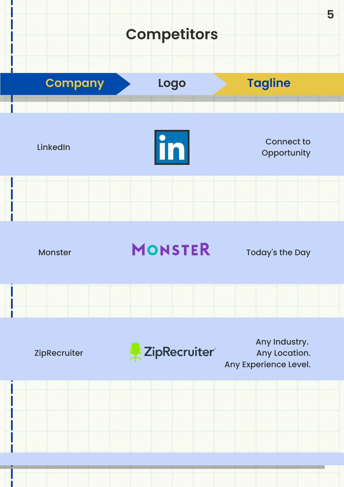
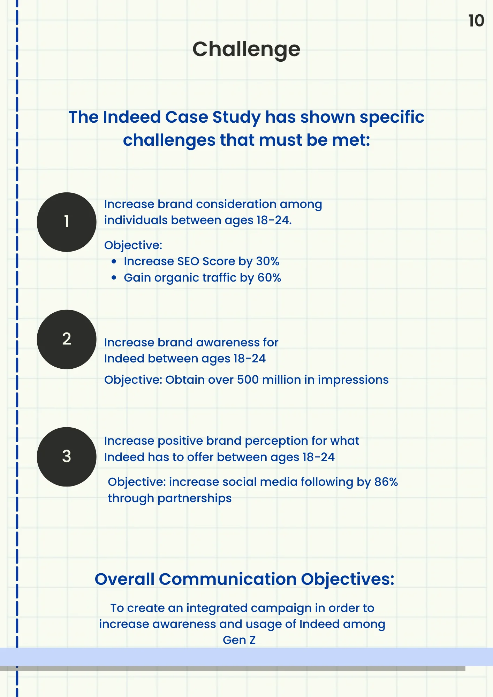
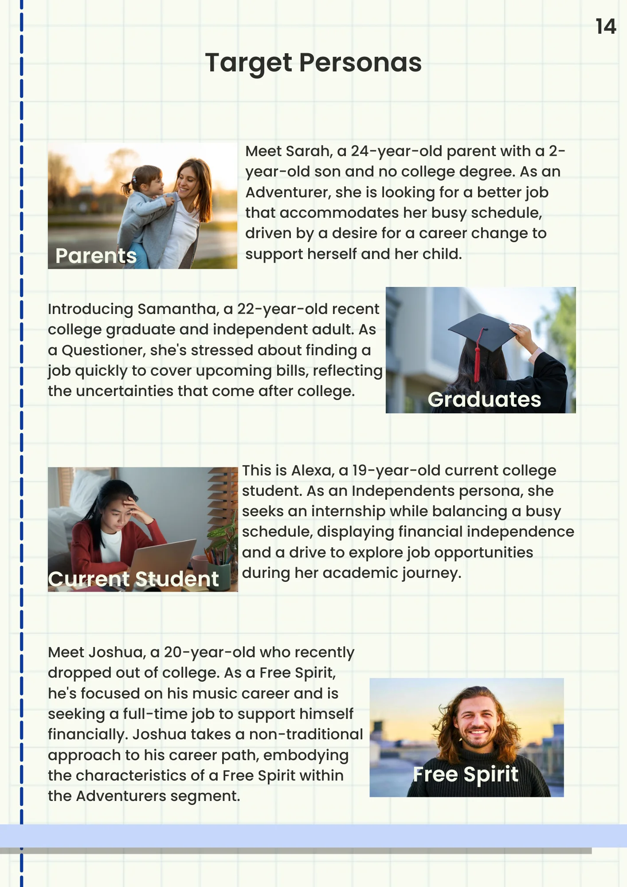

Work / Campaign Strategy
Indeed — 2023 Media Plan
A full media strategy to re-position Indeed with Gen Z jobseekers — built around empathy, cultural relevance, and a campaign idea that actually earns attention.

01 — The Brief
COVID changed everything. Gen Z noticed.
Indeed had a brand problem. The pandemic reshuffled career expectations — especially for Gen Z, who entered the workforce with a different relationship to work, loyalty, and purpose. The brief: shift Indeed's perception from "job board you use when desperate" to "the career partner that actually gets you."

02 — The Landscape
Competing against LinkedIn, Monster, and ZipRecruiter.
We mapped the competitive set — LinkedIn's professional prestige, Monster's legacy, ZipRecruiter's automation play — and found the white space: none of them were speaking to anxiety. They were all selling "get a job." We wanted to address what it actually feels like to be looking.

03 — The Challenge
Three clear objectives. One tight timeline.
We built toward three measurable targets: grow organic SEO traffic by 30%, generate 500M campaign impressions, and grow Indeed's social presence by 86%. These weren't vanity metrics — each connected to a different stage of the Gen Z awareness funnel.

04 — The Audience
Four personas. One shared feeling: uncertainty.
We developed four distinct Gen Z personas — Sarah (the anxious parent), Samantha (the recent grad), Alexa (the side-hustling student), and Joshua (the free spirit). Different situations, same emotional core. That insight drove everything downstream.

05 — The Idea
"Anxiety Ends When Indeed Begins."
The campaign concept meets Gen Z in the feeling they know best — job-search anxiety — and positions Indeed as the thing that ends it. Not a platform. A relief.